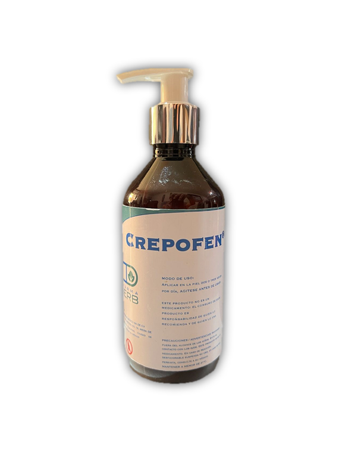

Hola! ¿en que podemos ayudarte?
Hola! ¿en que podemos ayudarte?


Induce enzimas de desintoxicación de fase II Siendo sus efectos antioxidantes 10 veces mas potentes. Ofrece protección para la piel atreves de la inhibición del factor de transcripción, factor nuclear Kappa beta NF-Kb e inhibición de proteínas de choque térmico HSP
La curcumina ataca múltiples enfermedades inflamatorias y es un doble inhibidor de la cascada del acido araquidónico y ejerce su efecto antiinflamatorio a través de la fosfolipasa, protegiendo células contra el daño.
Estabiliza las paredes capilares Mejora la circulación de heridas dérmicas Evita aumento de la permeabilidad capilar tienen la capacidad de entrecruzar las fibras de colágeno fortalece la matriz de Colágena, acelera considerablemente la contracción y el cierre de heridas. Limpia y regenera la piel, por lo que ayuda a la eliminación de bacterias y células muertas, dando un aspecto más joven a nuestra piel. favorece la cicatrización y eliminación de las marcas actúan como astringentes, haciendo que la piel deje de sangrar y protegiendo de infecciones.
Tiene un efecto reparador de la piel ya que ayuda a la formación de colágeno y de fibras elásticas, muy útil para evitar la formación de cicatrices anómalas y, a su vez impide la pérdida de agua, aumentando la capacidad de hidratación de la superficie cutánea, consiguiendo que la piel se torne tersa y luminosa. es un complemento perfecto para ayudar a la correcta cicatrización. produce un aumento de la elasticidad.

Resultados sobresalientes en lesiones pre-malignas (queratosis actínica) en manos, brazos y cabeza. Heridas postquirúrgicas como abdominoplastias, osteosíntesis, o cualquier procedimiento quirúrgico permitiendo efectos benéficos sobre la piel circundante. Eficaz en el tratamiento de Pie Diabético reduciendo las probabilidades de amputación ya que reduce el factor necrótico.
Adquiere tu producto ya: